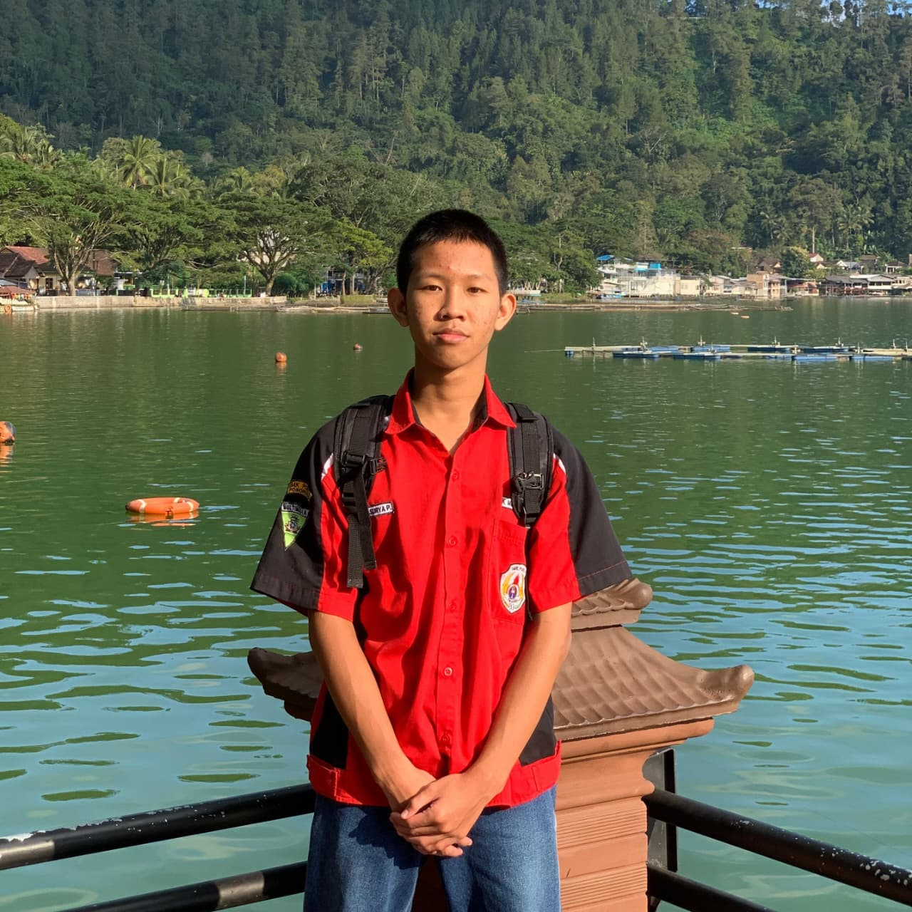

Profil Singkat
Mahasiswa S1 Teknik Informatika yang berfokus pada pemrograman C++, struktur data, algoritma, serta arsitektur komputer. Berpengalaman sebagai PJ Kelas dengan kemampuan komunikasi dan koordinasi akademik yang baik.
Mahasiswa Teknik Informatika

Mahasiswa S1 Teknik Informatika yang berfokus pada pemrograman C++, struktur data, algoritma, serta arsitektur komputer. Berpengalaman sebagai PJ Kelas dengan kemampuan komunikasi dan koordinasi akademik yang baik.
Universitas Muhammadiyah Ponorogo
Mahasiswa aktif Semester 3 (Kelas E1).
Universitas Muhammadiyah Ponorogo
Penghubung komunikasi antara dosen dan mahasiswa serta mengelola administrasi perkuliahan.
Membuat program Linear Search, Bubble Sort, Selection Sort, dan Insertion Sort menggunakan Code::Blocks dan Flowgorithm.
Merancang diagram alur data dan arsitektur bus sistem menggunakan Draw.io dan Mermaid.js.